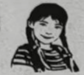
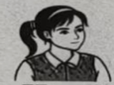
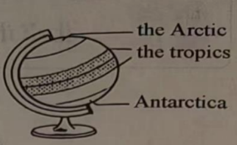
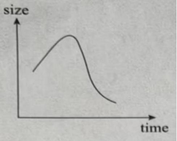
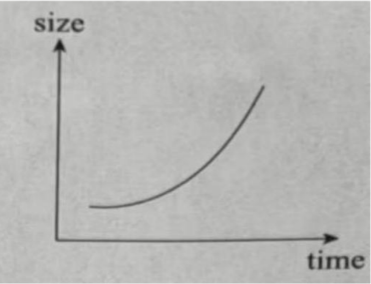
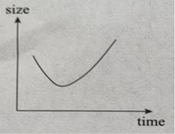
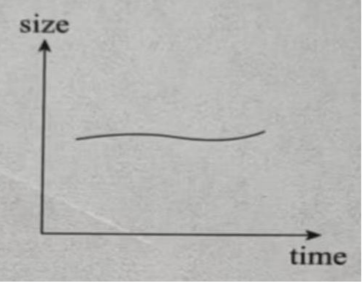

2026年北京市中考英语试题 · 阅读理解 第24、25、26、27、28、29、30、31、32、33题
三、阅读理解（每题2分，共26分）
（一）
A
阅读下列周末休闲活动介绍，请根据人物意愿和需求匹配最适合的活动，并将活动所对应的选项（A、B、C、D）填在相应位置上。其中一个选项为多余选项。
Fun Activities on Weekends
A | Do you want to ride a horse? Welcome to try it in our park. All our horses are carefully chosen and well-trained. They are safe to ride, even for beginners. So, don’t wait! Come and enjoy this exciting sport. | B | Are you a fan of biking? Join us and bike around the lake. Just follow the flat paths (小路), and you will be greeted by beautiful flowers and trees. Best of all: You can have a happy time outdoors and make new friends! |
|
|
C | Welcome to our family-friendly garden in the city centre. We have many kinds of flowers. You can learn about their names and the places they come from. By the way, you will find many snack shops at the south gate. | D | Hope to ride a 50-year-old train? If so, our activity is your right choice. Get on the train for a relaxing two-hour trip around the city. You can have a great time while enjoying the beautiful view along the way. |
|
|
____21____ |  Amy | I plan to go to the city centre, learn more about flowers, and try some tasty snacks. |
____22____ | Mike | I’d love to try horse riding. It sounds perfect for me because I really like exciting activities. |
____23____ |  Hazel | I really want to have a bicycle ride along the water while enjoying the beautiful view. |
（二）阅读下列短文，根据短文内容，从短文后各题所给的 A、B、C、D 四个选项中，选择最佳选项。
B
Linda always dreamed of having many great toys, but buying them all was almost impossible.
One afternoon, exploring behind her apartment building, Linda discovered something wonderful. An elderly woman was creating beautiful playthings using thrown-away materials and natural objects. She built a tower from parts of cardboard boxes, and a tiny house with sticks, leaves, and stones.
“How do you make such wonderful toys without buying anything?” Linda asked, amazed.
“The best toys aren’t bought in stores,” the woman smiled warmly. “They’re created with your own hands and imagination. Everything, even the things people throw away, can become something magical. You just need a little creativity.”
Inspired (受到启发), Linda began trying out some ideas at home. She found treasures everywhere. A shoe box became a toy theatre. Old socks turned into materials for fashion dolls and old magazines became their clothes. Plastic bottles were used to build rocket ships. Soon, Linda’s bedroom became a world of wonder. Each creation taught her something about design, engineering, and storytelling.
One day, Linda went to see her teacher, Mr. Thompson, with an idea. “What if we have a toy-making workshop where students can make their own toys for show-and-tell?” Mr. Thompson was uncertain. Linda then presented the toys she had made, showing him how well-designed and interesting they were.
Surprised by her creativity, Mr. Thompson decided to have an activity named “Invention and Innovation (创新) Week” to encourage students to make and show their creative works. Linda was excited and began to teach other students her toy-making skills.
During the week, something magical happened. The handmade toys fired everyone’s imagination in ways store toys never could, inspiring stories, games and plays. Some teachers even started to include creative toy-making in their lessons. A local newspaper reported on these young inventors. Other schools wanted to follow their creative practice.
The big success of the activity filled Linda with pride. She realised creativity can also be about finding possibilities in seemingly useless materials.
24. How did Linda feel when she saw the elderly woman making playthings?
A. Proud.B. Satisfied.C. Warm.D. Amazed.
25. What activity did Linda suggest to Mr. Thompson?
A. A fashion design show.B. A toy-making workshop.
C. A storytelling competitionD. A second-hand magazine fair
26. What did Linda learn from her experience?
A. Teaching others helps us learn more quickly.
B. Friendship may develop from sharing stories.
C. Creativity can mean finding hidden possibilities.
D. Exploring nature leads to the discovery of beauty.
C
While the size of Arctic sea ice has dropped by about 40 percent over 40 years, until recently, the size of the sea ice around Antarctica was slowly increasing. Then, after 2015, Antarctic ice extent (范围) fell from a record high to several record lows, losing an area as large as Greenland.

Some research has suggested that higher air temperatures may be the cause. However, two new studies show that ocean warming played a bigger role in this dramatic change. As part of global ocean circulation (全球海洋环流), warm saltwater moves southward from the tropics and circles Antarctica 200 metres below the surface. But temperature and saltiness records of the past 20 years suggest that this warm deep saltwater has been rising towards the surface, where it can melt (融化) sea ice.
Antarctica is encircled by a belt of strong winds and storms. Climate change has pushed this storm belt southward, bringing more rain and snow into the sea ice area, according to a study by Earle Wilson and other researchers at Stanford University. The rain and snow create a layer (层) of fresh surface water that better protects the bottom of the sea ice from warm deep saltwater, allowing it to grow to its 2014 record high. But the same southward-moving storm belt also brings stronger winds. These winds blow surface water and ice forward. As this happens, warm deep saltwater rises up to fill the empty space.
Between 2014 and 2016, this wind-driven rising began to get the upper hand against the protective layer of increased rain and snow, and sea ice began to melt away. When the researchers input the recorded ocean data (数据) into a computer model, it projected that sea ice would grow and then become smaller, as it did in the real world.
The researchers plan to study and model other things, which also likely play roles throughout Antarctica. Examples include changes in sea ice movement and increases in ocean mixing resulting from more storms. By studying the ocean data, they hope to build a model to project changes in Antarctic sea ice in the years to come.
27. Which of the following best shows the Antarctic sea ice changes around 2015?
A.

B. 
C.

D. 
28. In which order are the following events discussed in Paragraph 3?
①Warm deep saltwater rises to the surface.
②A layer of fresh surface water is created.
③Surface water and ice are blown forward.
④More rain and snow are brought into the sea ice area.
A. ②④①③B. ②④③①C. ④②①③D. ④②③①
29. Which of the following is the best title for this passage?
A. Where is Antarctic sea ice loss taking us?
B. Is this the cause of Antarctic sea ice loss?
C. Will a new model explain Antarctic sea ice melting?
D. How does fresh surface water protect Antarctic sea ice?
D
The internet has provided us with unmatched ways to get information but it is also sounding alarms. Some experts argue that the internet will produce forgetfulness in the minds of those learning to use it, because they won’t practise their memory.
Is the internet really doing harm to our memories—or will our doubtful experts be proven wrong? After all, the brain’s attention system (系统) and preferences for novel experiences were already there long before the digital age, and our ability to remember is nearly inexhaustible (无穷尽的). According to Michael Merzenich, a brain researcher, every brain is a work in progress; it keeps changing throughout our lives, depending on how we use it.
But our brains don’t work well when we’re not focused. When we repeatedly check text messages and social media during work, we are weakening our ability to form both short-and long-term memories, experts say. The flooding of information influences our ability to remember, too. Though our brains are designed to look for new data, too much of it may be causing this natural drive to go wild. The compulsion to continuously take in information means we often check social media when we should be doing “memory housekeeping” by giving our brains some rest. Another problem: the effortless way of receiving information online. Trying to actively recall (回忆) data is a good workout for the brain, but today we are using online search tools instead.
However, the internet may be changing only what we remember, not our ability to do so, suggests Columbia University psychologist (心理学家) Betsy Sparrow. In fact, the internet is becoming an outside hard drive for our memories. Some worry that this is having a negative effect on society, but Sparrow suggests this will change our way of learning from a focus on remembering facts to one on understanding ideas.
As is shown in a 2008 study, using the internet exercised the brain more than reading among older adults with strong computer skills. And two Harvard psychologists argue that not needing to remember facts might free our minds to focus on more meaningful tasks.
“There may be costs caused by our increased dependence on the internet, but generally the benefits are going to outweigh those costs,” says Benjamin Storm, a psychologist. “It seems pretty clear that memory is changing, but is it changing for the better? At this point, we don’t know.”
30. What does the word “compulsion” in Paragraph 3 most probably mean?
A. Longing.B. Ability.C. Chance.D. Promise.
31. What can we learn from the passage?
A. Internet users remember facts better than non-users.
B. Novel experiences improve the brain’s attention system.
C. Checking social media can give the brain proper breaks.
D. The internet may produce a change of focus in learning.
32. How does Benjamin Storm feel about the effects of the internet on memory?
A. Uneasy and doubtful.B. Positive but still uncertain.
C. Negative but still hopeful.D. Encouraged and confident.
33. What is the writer’s main purpose in writing this passage?
A. To argue for a belief.B. To challenge a solution.
C. To present different views.D. To examine causes and effects.
第二部分
本部分共5题，共20分。根据题目要求，完成相应任务。